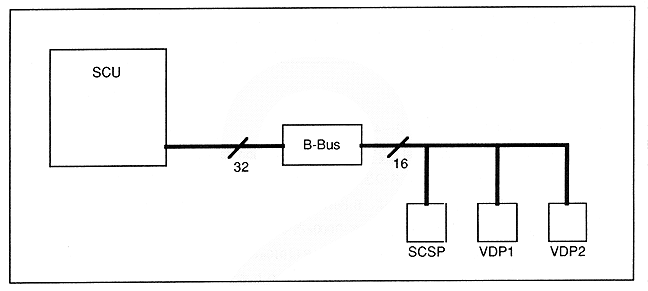
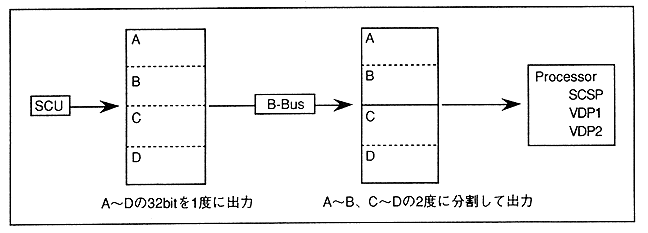

∙ There is a rule for this write address addition value as shown in Figure 3.6. As shown in this figure, SCU and B-Bus communicate in 32bit units, but B-Bus and processor communicate in 16bit units. Therefore, as shown in Figure 3.7, when transferring data from A to D to the processor from the SCU, the SCU can transfer A to D to the B-Bus at one time, but the B-Bus sends to the processor. On the other hand, there is no choice but to divide and transfer to A ~ B and C ~ D. Because of this, the B-Bus write address addition value is in units of 2 bytes, so the difference between address 2 and address 1 can be specified as the write address addition value as shown in Figure 3.8.
Figure 3.6 SCU-processor communication unit

Figure 3.7: Example of transfer between SCU and processor
